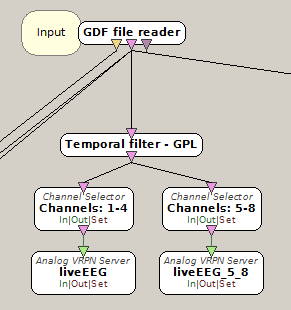

Table of Contents¶
Table of Contents
- Table of Contents
- CENT Application - User’s Documentation
- CENT Application - Developer’s Documentation
- Appendix A
- Appendix B
- Appendix C
CENT Application - User’s Documentation¶
by Robert Rabenel & BLStream colleagues.
System Overview¶
What is CENT?¶
CENT (Computer Enabled Neuroplasticity Treatment) is an application for a novel treatment method for various brain diseases, esspecially Attention Deficit Hyperactivity Disorder (ADHD). CENT is monitoring patient’s brain activity and using different visual stimulations, encouraging patients to alter their brain activities. This treatment is devoid of any side effects and has long-term effectiveness.
Installation¶
Note
CENT works on Windows 7, on both 32 bit and 64 bit architectures. Recommended is Windows 7, 64 bit.
Warning
Before following installation steps, make sure that your EEG Cap drivers are installed. More about that in Supported EEG Devices section.
These instructions describe how to install CENT Application:
- CENT uses OpenViBE platform. It has to be downloaded from http://openvibe.inria.fr/downloads and installed first (for documentation look at http://openvibe.inria.fr).
Warning
Remember location of the OpenViBE installation folder, you will need that information during CENT installation.
- Install CENT Application from CENTInstaller.msi
CENT installer will guide you through the installation process. One important thing to underline is, that at some point you will be asked to indicate where OpenViBE is installed.
- At this point you are ready to start CENT application.
CENT Application Usage¶
Application Start¶
CENT application, when started, will present Select Cap Drivers window. The choice we have two cap drivers 4 and 8 channels.
For 8 channels cap driver we have to set MAC address needed to run (it’s not possible go to next step without MAC address). MAC is store in memory.
Application is designed to work with two monitors - patient’s and therapist’s. CENT application, will present two similar windows - first on therapist’s monitor, second - on patient’s. Both windows have a name in the window header, so they can be recognized.
Those windows are not independent - any activities will affect both of them. For example “Start” button in patient’s or therapist’s window will switch to the next step on both windows.
Backup Settings¶
To choose backup location therapist have to open settings (Tool->Settings). In new window click “Change” and choose destination directory. This is a one-way synchronization of patient’s data (whole Patients directory - My Documents\CENT\Patients). Backup is incremental, so locally deleted files won’t be removed from the backup.
Backup under the hood¶
This information might be usefull if you happen to have trouble with the backup functionality. Underneath Cent uses robocopy cmd utility provided with Windows 7. The backup is invoked after every new file created. Failures are silent (only logs). The command used is: ROBOCOPY [source] [destination] /S /LOG:robocopy.log. It goes without saying that the user that runs Cent, has to have appropriate write access on the destination path.
OpenViBE Console Output¶
More advanced users of the CENT System, especially those creating new signal processing schemes, may benefit from the insight into the more detailed messages about the internal happenings. To open OpenViBE Console use Debug->OpenViBE Console Output in application menu. It will open new window with two tabs which will let you see messages comming from the Acquisition Server and from the OpenViBE Designer running in the background.
Patient Information Gathering¶
After clicking on “Start” there will be next page regarding patient’s information. First patient type her/his name and last name. There are allowed letters, numbers and ‘_’ character. Click “Continue” for next page. If it is new patient you have to choose IEP folder if it does not exist in patient directory. The IEP folder should contain:
- IEP\class_beta.cfg
- IEP\class_theta.cfg
- IEP\default_baseline\thetabase.cfg
- IEP\default_baseline\betabase.cfg
- IEP\default_baseline\baseline_spectrum.csv
Next step is about the quality of the last night’s sleep. Patient should provide his last night’s sleep duration (max 24) and information about how much time elapsed since he woke up (maximum 72). Click “Continue” for next page or get back to patient’s name screen with “Back” button.
Motivation plays an important factor. In the next screen patient needs to ask himself how motivated to do the session she/he feels.
Patient’s mood follows - patient have to choose one of nine characters:
And the last thing is to choose how excited patient feels today - patient have to choose one of nine characters:
At this point, patient or therapist can start the session with “Start session” button.
Note
Information about the patient - hours of sleep, mood, excitement, etc. are saved in a text file:
My Documents\CENT\Patients\[OBFUSCATED_PATIENT_NAME]\session_[DATESTAMP]\patient_condition.txt
For more information about patient data see Patient data storage.
Note
Patient’s name is obfuscated to secure his privacy. There is a separate tool (Mapping Tool) provided, which is able to deobfuscate those names. This application is available only to designated people.
OpenViBE Scenario Group selection¶
On the next page, therapist must choose scenario group. CENT application is using OpenViBE scenario files to process EEG signals. Different scenarios may be in use, depending on the used EEG cap, and other factors. To add new scenario group you have to create new directory in [CENT_INSTALLED_FOLDER]\scenarios. Directory name will be used as a name of the scenario group.
EEG Cap Setup¶
Note
This information is for Enobio® device but other devices could be similar
Patient have to put Enobio® cap on his/her head. Then therapist attach the Enobio® to the cap using the velcro. The next thing therapist place holders in the cap holes, insert the gel and plug the electrodes. Therapist can also put dry electrodes on the headband. There is also one electrode for a right ear. The last thing to do is to plug the USB reciver into the computer. More information you find in device manual.
Baseline Measurement¶
When EEG Cap is correctly placed and connected, therapist can proceed to the baseline measurement. Therapist must enter measurement time and ask patient to look at the cross in the center of the window.
Note
Therapist should observe noise level indicatior to be able to decide if measurement should be taken again.
4 channels noise level.
8 channels noise level.
Therapist can end baseline measurement earlier than specified using “End recording” button.
After baseline measurment, therapist will be presented with the EEG signal power spectrum and calculated Beta and Theta power values. At this point therapist should enter coefficients for both of those power bands, as well as information about duration of the game that will follow.
Game Selection¶
After baseline measurement, CENT is expecting patient or therapist to choose a game which will be played during the session. List of available games will be presented in both windows. Each game has a tutorial which explains the rules of the game.
Gameplay¶
During the game therapist can observe EEG chart on his window. Patient should focus on the game. Game will end after pressing “End game” button on therapist window or after some time which was set by therapist.
Game Summary¶
After the game result charts will be presented in both windows. Each bar on the chart represents percentage of the time spent in positive classification (desired state of mind). Patient can play again or change the game. Therapist can also get back to the baseline results to change parameters or show session summary.
Session Summary¶
Whole session consisting of number of the games is summarized in similar way. On this chart, each bar represents percentage of the time spent in positive classification (desired state of mind) during the sessions (one bar for all the games playd within one session).
Patient’s Evaluation¶
After the session patient is asked two follow up questions.
End Session¶
Session may be ended with “End session” button. After that CENT application will present first screen, starting whole process from the beginning.
Mapping Tool¶
Mapping Tool is a command line application which creates mapping between hashes and real patient’s names. To use it, one shall execute it in the command line console, indicating localization of the folder with patients data:
MappingTool.exe K:\\PatientsFolder
Application will create a text file in current directory. File will follow simple structure:
[patient name];[encrypted patient name]
You will find MappingTool in MappingToolPackage.zip. It is accompanied by QtCore4.dll, which is required to run this application.
OpenViBE as a Digital Signal Processor in CENT¶
How OpenViBE is used by CENT System?¶
CENT application uses OpenViBE platform to process data from the EEG device. OpenViBE runs in the background with preselected scenarios. CENT starts OpenViBE when needed - while processing data from EEG device, during baseline measurement and when patient plays the game. There are different scenarios used for the baseline measurement and for the gameplay.
Protocols Development¶
Environment Variables¶
- “CENT_CURRENT_PATIENT”; - variable to Patient’s folder: My Documents\CENT\Patients\[CUR_PAT]
- “CENT_CURRENT_SESSION”; - variable to Patient’s current session folder: My Documents\CENT\Patients\CUR_PAT]\session_[DATESTAMP]
- “CENT_CURRENT_GAME”; - variable to Patient’s current game folder: My Documents\CENT\Patients\CUR_PAT]\session_[DATESTAMP]\games\[GAME_NAME]_[DATESTAMP]
- “CENT_SCENARIOS_HOME”; - variable to CENT scenarios: [CENT_INSTALLED_FOLDER]\scenarios\[SCENARIO_GROUP_NAME]
- “OPENVIBE_HOME”; - variable to OpenViBE install folder
Available Scenarios¶
All scenarios used by CENT application are stored in [CENT_INSTALLED_FOLDER]\scenarios\[SCENARIO_GROUP_NAME].
- Every group scenario has to have these four scenarios:
- cent_monitoring_and_noise.xml
- cent_baseline.xml
- cent_generate_configuration.xml
- cent_game.xml
Scenarios requirements¶
Every scenario needs two boxes for the Cent to be able to stop it cleanly.
Their configuration is as follows:

Monitoring and noise scenario¶
- This scenario is expected to provide live EEG signal and live noise level information, both through VRPN Analog Servers. Noise level is passed through 5 channels that are:
- Current noise value
- Noise threshold1
- Noise threshold2
- Min value
- Max value
The servers are called accordingly: liveEEG, CENTNoiseLevel
Most scenarios will usually use Aquisition client to get EEG data, but it is not a requirement.
Baseline scenario¶
It is supposed to create a [{CENT_CURRENT_SESSION}]\baseline_spectrum.csv spectrum file and two intermediate files used by next scenario. These file are [{CENT_CURRENT_SESSION}]\betaval.csv and [{CENT_CURRENT_SESSION}]\thetaval.csv. It is also expected to provide live EEG signal and live noise level information, like the previous one.
Here the CENT VRPN Client is slightly extended to the base one. Additional stimulations can be used in stream switch box.
Generate configuration scenario¶
This one has to create two files used by next scenario. These file are [{CENT_CURRENT_SESSION}]\betabase.cfg and [{CENT_CURRENT_SESSION}]\thetabase.cfg.
Game scenario¶
Main functionality of this scenario is to provide classification outcome and epoch notificatio through VRPN Button Server configured as follows:
The epoch notification is like a beacon informing about new classification to overcome the limitation of VRPN Button Server that is notifying the client only on value change. One way is to do it via Lua script like that:
1 2 3 4 5 6 7 8 9 10 11 12 13 14 15 16 17 18 19 20 21 22 23 24 25 26 27 28 29 30 31 32 33 34 35 36 37 38 39 40 41 42 43 44 45 46 47 | dofile(os.getenv("OPENVIBE_HOME") .. "/share/openvibe-plugins/stimulation/lua-stimulator-stim-codes.lua")
stim = OVTK_StimulationId_Label_00
-- this function is called when the box is initialized
function initialize(box)
io.write("initialize has been called\n");
-- inspects the box topology
-- io.write(string.format("box has %i input(s)\n", box:get_input_count()))
-- io.write(string.format("box has %i output(s)\n", box:get_output_count()))
-- io.write(string.format("box has %i setting(s)\n", box:get_setting_count()))
-- for i = 1, box:get_setting_count() do
-- io.write(string.format(" - setting %i has value [%s]\n", i, box:get_setting(i)))
-- end
end
-- this function is called when the box is uninitialized
function uninitialize(box)
io.write("uninitialize has been called\n")
end
-- this function is called once by the box
function process(box)
io.write("process has been called\n")
-- enters infinite loop
-- cpu will be released with a call to sleep
-- at the end of the loop
while true do
-- gets current simulated time
t = box:get_current_time()
if box:get_stimulation_count(1)==1 then -- stimulation received
box:send_stimulation(1,stim,t,0)
if stim == OVTK_StimulationId_Label_00 then
stim = OVTK_StimulationId_Label_01
else
stim = OVTK_StimulationId_Label_00
end
box:remove_stimulation(1, 1)
end
-- releases cpu
box:sleep()
end
end
|
- Another important thing is to publish Current theta/beta powers through 4 Analog channels of VRPN server called CENTInGamePowerLevel. These channels are:
- theta value
- theta extent
- beta value
- beta extent
It is also expected to provide live EEG signal and live noise level information, like the previous ones.
8 channel scenarios¶
8 channel scenarios has to forward live EEG channels from 5 to 8 via additional VRPN Analog Server called liveEEG_5_8 like that:
Adding scenario groups¶
You can create new scenarios in OpenViBE designer. Just create *.xml file with scenario and modify it. More information about creating simple scenario you find on official OpenViBE site at: http://openvibe.inria.fr/documentation-index/#User+Documentation
Supported EEG Devices¶
Starlab® Enobio¶
General Information¶
Enobio® is a wearable, modular and wireless electro-physiology sensor system for the recording of EEG, ECG and EOG. Enobio® has 4 channels, bandwidth from 0 to 125 Hz and wireless (IEEE 802.15.4) communication. More information about Enobio® you find in manual or on http://starlab.es/products/enobio
Installation¶
Note
This information are for Enobio® 2.0
Plug in the USB disk from Enobio® to the computer. You find there Enobio® 2.0 User Manual and Enobio® 2.0 Quick Start Guide. Plug in the USB port wireless receiver.
If the drivers will not install automatically. Install it from Device Manager (My Computer -> Properties -> Device Manager). Find new device on the list and update driver choosing folder usb_drivers on Enobio® USB disk.
Enobio® device now is ready to work with CENT application.
Other EEG Devices¶
CENT Application is able to use different EEG Devices, as long as those are supported by OpenViBE platform. In other case, new drivers can be developped. See brief overview of the drivers development in EEG Cap Drivers Development section.
How Acquisition Server collect samples¶
Happy scenario is that the cap provides 250 samples per second times four channels and all the Acquisition Server has to do is to push it forward to Designer. Yeah that almost never happens. There are many reasons from computer being stuck at something (even for 100ms is bad) to many kinds of noise (environmental or due to patient fault, like skin movement).
When something bad happens with the sample, Enobio cap flags that sample as “LOST PACKET”. Our driver ignores those packets.
In the Acquisition Server that situation is called a drift (it can happen both ways: too many or too little data). To guarantee 250Hz it adds interpolated samples to the sending buffer. The best thing about it, is that it flags samples also with stimulations: OVTK_GDF_Correct and OVTK_GDF_Incorrect. You can see them in SigViewer when you open any GDF file written by CENT.
There are this pink vertical lines (stimulations) and the first stands for Incorrect and the second Correct one. What is between them is interpolated by Acquisition Server, so nothing random.
Conclusion is that if you want to be super accurate you can take those stimulations into account when processing signal in OV Designer. I don’t think you have to worry about that but wanted you to know a little bit about the under the hood stuff.
Patient data storage¶
General information¶
All patient data is stored under C:\Users\[username]\Documents\CENT\Patients. Under every patients’ obfuscated folder are folders for every session. Session folder name has an embedded date and time. For example session_20120519183421 Is a session recorded on 19/05/2012 at 18:34.21. Next to the sessions’ folders is an IEP folder put there by CENT on patient creation. The therapist has to provide a valid original IEP folder for this functionality to work.
Privacy security and it’s limitations¶
Every patient’s folder name is obfuscated for privacy reasons. However there are some limitations to that. When thinking about privacy of patient’s information one needs to be aware that a clever user with access to CENT system and it’s folder structure can still figure out which folders belong to which patients.
Simplest way to go around this protection is to click “save as” option in notepad when it has session_notes.txt open for current patient. Another approach would be to check timestamps of the session folders. Knowing when a patient recorded his or hers session it’s easy to guess which folder is who’s.
The solution (obfuscated folder name) is a good approach covering basic privacy rules. It’s architecture is based on known usage patterns for CENT system. Authors of the software do not take responsibility for an incorrect or improper use of the software.
Added Functionality for Trainers¶
by Ben Cowley
Recap Visualisations¶
The Tools menu in the Trainer’s window contains the ‘Recap Tool’. This is a deployed Matlab application and will take some time to process: between 3-7 minutes. When called, the CENT platform passes two arguments to CENTrecap.exe: the env var CENT_CURRENT_SESSION and an integer which specifies which set of results to display (currently this is always the first set relating to scores, as EEG-data processing requires more work to build into the deployed version of Matlab). Several windows will be output, the most useful of which is the adjusted session scores for this patient:
- To run the CENTrecap add-on you will need to install Matlab Compiler Runtime (MCR) version 7.17 (R2012a). Obtain it from
- http://www.mathworks.com/products/compiler/
Reject Game Trial¶
The Tools menu also contains the function ‘Mark This Trial As Bad’. This allows the trainer to quickly add a text file to the CENT_CURRENT_GAME folder which is titled ‘trainer_says_no’ - this will indicate to any post-processing code (such as CENTrecap.exe) that this trial should be ignored.
CENT Application - Developer’s Documentation¶
CENT ZIP Packages¶
We provide two zip packages:
- CENTPackage.zip
- CENTSources.zip
In CENTPackages are: Installer, Mapping Tool, Documentation, GameTutorial and CENTrecap.
In CENTSources are all sources to build CENT application.
To build Cent system you will also need 3rd party packages. They are widely available as open source programs on their websites (with information on the version we used):
- http://qwt.sourceforge.net/ (version 6.0.1)
- http://www.cs.unc.edu/Research/vrpn/ (version 07.29)
- http://openvibe.inria.fr/ (version 0.12.0-svn3107)
For unit tests you will also need visual leak detector:
- http://vld.codeplex.com/ (version 2.1.0)
Development Environment Setup¶
First note that more exhaustive instructions on Building the Platform, and users’ Build Logs, are available in Appendix A.
Required Software¶
- Qt 4.8 SDK (install to C:Qt4.8.3)
- Qt mobility (needed for Installer Build)
- Microsoft Visual Studio 2010
- OpenViBE software source codes
- Qwt sources
- Matlab (only for compiling CENTrecap.m)
Required System Variables¶
Type “edit env” to the Windows Start menu to see the existing Environment Variables.
- CENT_SDK - directory where You have checked out/unpacked the SDK for CENT: this is C:\CENT\cent\CENTSystem in our build: Building the Platform.
- VRPN - path to the VRPN code: in our build this is %CENT_SDK%\CENTApplication\src\vrpn\
- OPENVIBE_SRC - likely to be %CENT_SDK%\OpenVibe
- WIX - installation folder for WIX: generally C:\Program Files (x86)\WiX Toolset v3.6
- QMAKESPEC - in our build C:\QtSDK\Desktop\Qt\4.7.3\msvc2008\mkspecs\win32-msvc2010
- Add Qt binaries folder and CENTrecap.exe location to the PATH system variable
Getting the Code¶
Getting the code as an archive¶
Final package (including these docs and source code) are available as a ZIP archive from the University’s CENT team representatives; these sources contain a number of incremental upgrades not part of the BLStream final delivery.
Last stable deliverable from BLStream is available from:
In either case, logon credentials should not be needed.
Checkout from GIT¶
Note
Those links work for BLStream employees only.
- git+ssh://[ACRONYM]@git.blstream.net/project/cent-test.git
- git+ssh://[ACRONYM]@git.blstream.net/project/cent_games.git
- git+ssh://[ACRONYM]@git.blstream.net/project/cent_openvibe.git
- git+ssh://[ACRONYM]@git.blstream.net/project/cent_qwt.git
- git+ssh://[ACRONYM]@git.blstream.net/project/cent_sdk.git
- git+ssh://[ACRONYM]@git.blstream.net/project/cent_vrpn.git
Build Instructions¶
Build CENT Qt Application¶
First you need to build VRPN from the directory that VRPN environment variable is pointing to: Compile by importing the *.sln file to Visual Studio.
Then onto the CENT application. Make the *.pro file into a Visual Studio *.vcxproj file:
qmake -tp vc -r %CENT_SDK%/CENTApplication/CENTapplication.pro
Open the *.vcxproj generated solution file in Visual Studio and build (as Release - see Building the Platform).
Before running remember to put qwt.dll into output directory of CENT system
Build OpenViBE on Windows¶
Note
There is a build guide in Appendix A: OpenVIBE & Libraries
Download and put the sources of the latest OpenVibe into:
%CENT_SDK%\OpenVibe\
Run and wait for install:
%CENT_SDK%\OpenVibe\scripts\win32-install_dependencies.exe
Copy:
%CENT_SDK%\OpenVibe\scripts\win32-init_env_command.cmd-skeleton
Rename it to:
%CENT_SDK%\OpenVibe\scripts\win32-init_env_command.cmd
Run in command line:
%CENT_SDK%\OpenVibe\scripts\win32-init_env_command.cmd
%CENT_SDK%\OpenVibe\scripts\win32-build.cmd
OpenViBE will be built in:
%CENT_SDK%\OpenVibe\dist\
Build an OpenViBE Box¶
Warning
WIP - Should this be covered by or linked to Jari’s documentation??!!
You need to build OpenViBE with the box code inside the plugins folder. The dll with the plugin will be put into:
%CENT_SDK%\OpenVibe\dist\share\openvibe-plugins\[your-plugin-path]
To optimize the build process please refer to the OpenViBE documentation
To see the OpenViBE box in the designer create an openvibe.conf file in C:\Users\[user] and fill with:
Designer_ShowUnstable = true
Build OpenViBE Acquisition Server with Starlab® Enobio® Driver¶
Go to:
%CENT_SDK%\OpenVibe\openvibe-applications\acquisition-server
Then issue command:
mklink /D /J cent ..\..\..\..\EnobioAcquisitionServer\AcquisitionServer
Edit previously created win32-init_env_command.cmd and set CENT as a branch to be built. Appropriate line should look like:
SET OpenViBE_application_acquisition_server_branch=cent
Rebuild as usual. You may find it handy to run:
%CENT_SDK%\OpenVibe\scripts\win32-generate-vc-proj.cmd
Which will configure Visual Studio project and drop it to:
%CENT_SDK%\OpenVibe\local-tmp/visual
Build Qwt¶
Download Qwt sources and put them in %CENT_SDK%/SDK/qwt Import Qt pro file, build, copy qwt.dll to CENT system output dir (don’t change the *.pro it’s LGPL)
Installer Build¶
Warning
If the CENT platform is rebuilt, the installer must also be rebuilt to update the installation on any Windows machine: if the new *.exe file was simply copied over the old one, the original installation would revert on the next reboot.
First, you need wxs toolset/addin from microsoft (candle.exe and light.exe) in your path. You can follow one of these instructions (or both): http://msdn.microsoft.com/en-us/library/gg513936.aspx http://wix.sourceforge.net/votive.html
The expected result is that you can use candle.exe and light.exe from cmd (for CENT ‘create_package’ script to work).
Note
You should also be able to use it from Visual Studio (but keep in mind that “Votive will not work on the Express SKUs of Visual Studio”). It might be useful for diagnostic purposes.
You must have built the CENT platform and all CENT games (e.g. see CENT Installer Build Log).
You must download and build qtmobility, and add to %CENT_SDK%\SDK.
Warning
Be sure to download the ‘master’ qtmobility package.
You must have the merge modules from Visual Studio Professional, e.g. C:\Program Files (x86)\Common Files\Merge Modules\Microsoft_VC100_CRT_x86.msm.
Note
You can get these from the trial version and they will still be usable after expiration of the trial.
Updates to 3rd party components such as the Enobio API dlls can be done by manually copying the new ones into %CENT_SDK%\output.
The final step is to run a script to build the CENT installer: CENTSources/cent/CENTSystem/build/create_package.bat
Now find the CENTInstaller.msi at %CENT_SDK%\build\output
CENT Games Development¶
Currently Available Games¶
Currently are available three games in CENT application:
Simple Ball Game¶
Simple Ball Game - where patient must try to focus to move the ball up and keep it there. The higher the ball goes the better is her/his score.
Empty Ball Game¶
Empty Ball Game - example of game, to show on a list. During this game circle changes color.
Media Game¶
Media Game - presented image or video files to the patient while obfuscating them with visual noise. Level of obfuscation is calculated on the basis of the changes of EEG signal classification in time.
- Media Game:
- shows to the user his current score
- shows to the user the current obfuscation level in a visual manner:
- a as varying alpha intensity which ranges from transparent (no obfuscation at maximum high performance) to opaque (total obfuscation at maximum poor performance).
- as a clipping view port in the shape of ellipse with neutral colored (palette of gray) screen outside it: the ellipse radius varies in steps depending on recent classifications.
- provides settings screen for the therapist
- Media Game Video or Image mode
Playing a video file (of common formats like “.avi”) file (with audio) or image file ( like “.bmp”) in the center of the game screen. Video is obfuscated by alpha based obfuscation using a picture with noise or a solid color layer. Noise transparency is depend on the obfuscation level calculated by the obfuscation algorithm. There is no audio obfuscation. The video file has to be supported by Windows native player and system codecs.
- Media Game Blank Mode
Blank screen just with all other controls, that are common in all modes (like current score for example).
All values like alpha levels, Elliptical clipping frame obfuscation can be modified in:
[CENT_INSTALLED_FOLDER]\plugins\MediaGamePluginData.ini
Example is shown below:
1 2 3 4 5 6 | [General]
ConstFactor=10
TimeoutObfuscationTimeMs=2000
ObfuscationLevels=100, 85, 70, 55, 40, 25
AlphaLevels=0, 40, 77, 115, 153, 192
WeightArray=2, 2, 1, 0.1
|
AstroComet Game¶
This is an adaptation of an existing commercial game for the CENT system. As such it is probably only available in non-commercial applications of CENT, due to licensing restrictions. In Astrocomet, the patient controls a ‘comet’ which is inside a ‘map’ on which appear targets. The comet will fly towards the targets, but speed is controlled by the player - if the comet is too slow the target will disappear before it is struck.
Location for the Games’ Data¶
All game results are saved in patient’s folder in:
My Documents\CENT\Patients\[OBFUSCATED_PATIENT_NAME]\session_[DATESTAMP]\games\
There is also saved session summary.
CENT Games API¶
General Information and Requirements¶
Exemplary CENT games are created with OpenGL and Qt. You can get Qt, SDK and free IDE at http://qt.nokia.com. There is an API for game developers, providing all needed communication from CENT to game, and back.
CENT Interface for New Games¶
Developers provide an interface to create new games. It is abstract class ICentGamePlugin in ICentGamePlugin.h. It is shown below:
1 2 3 4 5 6 7 8 9 10 11 12 13 14 15 16 17 18 19 20 21 22 23 24 25 26 27 28 29 30 31 32 33 34 35 36 37 38 39 40 41 42 43 44 45 46 47 48 49 50 51 52 53 54 55 56 57 58 59 60 61 62 63 64 65 66 67 68 69 70 71 | #ifndef CENT_GAME_PLUGIN_H
#define CENT_GAME_PLUGIN_H
// Includes special CENT data types. Data from device.
#include "CentDataTypes.h"
/*
This virtual class is an interface for new games in CENT application.
*/
class ICentGamePlugin : public QObject
{
Q_OBJECT
public:
virtual ~ICentGamePlugin() {};
public:
// Returns name of the game. You will see this name on page
// in CENT where you can choose a game.
virtual QString gameName() = 0;
/* This one is called to initialize, create and return game widget ready to start the game
* It is mandatory to be called before gameWidget()
* @return Game Widget if it is ok to start the game, otherwise NULL.
*/
virtual QWidget* gameWidget() = 0;
// Release Widget, is called prior to unloading the game plugin (this dll)
virtual void releaseWidget() = 0;
// Returns true if settings/configs can be written; returns false otherwise.
virtual bool isConfigurable() const = 0;
public slots:
// Called each time when the data comes from device.
virtual void onUserInput(CentData::DigitalData data) = 0;
// Called one time. Sets the expected input.
virtual void onExpectedInput(const CentData::DigitalData& data) = 0;
// Called each time when the EEG data come from the device.
// You can use it to display EEG plot during the game.
virtual void onEEG(CentData::AnalogData data) = 0;
// This method starts the game. There you have to restore to the initial
// state all variables and also emit gameStarted() signal.
virtual void onStartGame() = 0;
// Called when the game is ended from CENT ("End game" button or game time passed).
virtual void onEndGame() = 0;
// Called each time when the power data come from device.
// You can use it to display power plot during the game.
virtual void onPowerSignal(CentData::AnalogData data) = 0;
// This method shows the game settings.
virtual void onShowSettings() = 0;
signals:
// Copied from onExpectedSignal if not generated by game
void expectedInput(CentData::DigitalData data);
// Needed by the observer to start classification
void gameStarted();
// Decided by the game or called from onEndGame
void gameEnded();
};
Q_DECLARE_INTERFACE(ICentGamePlugin, "cent.game.plugin");
#endif // CENT_GAME_PLUGIN_H
|
You have to implement virtual methods and slots:
virtual ~ICentGamePlugin() {};
virtual QString gameName() = 0;
virtual QWidget* gameWidget() = 0;
virtual void releaseWidget() = 0;
virtual bool isConfigurable() const = 0;
virtual void onUserInput(CentData::DigitalData data) = 0;
virtual void onExpectedInput(const CentData::DigitalData& data) = 0;
virtual void onEEG(CentData::AnalogData data) = 0;
virtual void onStartGame() = 0;
virtual void onEndGame() = 0;
virtual void onPowerSignal(CentData::AnalogData data) = 0;
virtual void onShowSettings() = 0;
CENT Data Structres¶
There is also special class CentDataTypes in CentDataTypes.h. It is shown below. This class contain structure for data come from OpenViBE game scenario.
1 2 3 4 5 6 7 8 9 10 11 12 13 14 15 16 17 18 19 20 21 22 23 24 25 26 27 28 29 30 31 32 33 34 35 36 37 38 39 40 41 42 43 44 45 46 47 48 49 50 51 52 53 54 55 56 57 58 59 60 61 62 63 64 65 66 67 68 69 70 71 72 73 74 75 76 77 78 79 80 81 82 83 84 85 86 87 88 89 90 91 92 | #ifndef CENT_DATA_TYPES_H
#define CENT_DATA_TYPES_H
#include <QMetaType>
// Structures for data from OpenViBE game scenario
namespace CENT
{
enum ErrorCode
{
Success = 0,
WrongArgumentError,
NotSelectedCapDrivers,
UnknownError
};
};
namespace CentData
{
// Max number of channels
const int CHANNEL_MAX = 128;
//
enum GameControlStream
{
Classification = 0,
EpochNotifier
};
//
enum EEGPowerStream
{
POWER_THETA_LEVEL = 0,
POWER_THETA_RANGE,
POWER_BETA_LEVEL,
POWER_BETA_RANGE
};
//
enum CapDrivers
{
CapDriver4thChannels = 0,
CapDriver8thChannels,
UnknowCapDriver
};
// Cap drivers structure
struct CapDriverData
{
CapDrivers type;
QString name;
QString commandToRun;
};
// Timestamp structure
struct time
{
// Seconds
long tv_sec;
// Miliseconds
long tv_usec;
};
// Digital data structure
// Stimulations sent to CENT from OpenViBE scenario
struct DigitalData
{
// Timestamp of button press/release
struct time msg_time;
// Which button (numbered from zero)
int button;
// Button state (0 = off, 1 = on)
int state;
};
// Analog data structure
// Data of any stream matrix sent to CENT from OpenViBE scenario
struct AnalogData
{
// Timestamp of analog data
struct time msg_time;
// How many channels
int num_channel;
// Analog channel values
double channel[CHANNEL_MAX];
};
};
Q_DECLARE_METATYPE(CentData::AnalogData)
Q_DECLARE_METATYPE(CentData::DigitalData)
#endif // CENT_DATA_TYPES_H
|
Tutorial for CENT Games Developers¶
There is an archive CENTGamesTutorial.zip with the exemplary game and its source code. In this package you can find README.txt file with additional information. Besides that all sources and header files contain informative comments helpful during CENT game development. Additionally a user’s guide has been written as an internal record for University of Helsinki personnel: Game Plugin Development.
Adding Game to CENT¶
Copy game’s DLL file to CENT\plugins directory. You can also add game tutorial to CENT\plugins\Tutorials\[GAMENAME]_tutorial\. Tutorial directory must contain a static html page, with index.html file as a minimum. CENT will automatically recognize new game after the restart.
EEG Cap Drivers Development¶
Overview¶
If you have EEG device other than Enobio® and want to use it with CENT, you have to develop new OpenViBE driver. The driver for the OpenViBE acquisition server is an object that interacts with hardware. Server recives information and send them to OpenViBE for processing. EEG Driver architecture overview is based on Enobio® EEG cap, as described in Supported EEG Devices section.
Data Structures¶
The driver works with two kind of data:
- header - not change in time, contains identifiers (e.g. information about channels).
- buffer - change in time, contains samples of channels.
The driver works at different stages of the execution, which should be implemented:
- configuration
- intialization / uninitialization
- acquisition
You can use Skeleton-generator provided by OpenViBE to generate all files needed to build the driver.
More information about creating new driver you found on http://openvibe.inria.fr/tutorial-creating-a-new-driver-for-the-acquisition-server/
Appendix A¶
Building CENT Application - End User’s Notes¶
Building the Platform¶
by Teemu Itkonen
CENT Application¶
CENT depends on other software, such as VRPN, OpenVibe and Qt and Qwt. Building all the different pieces and putting them together requires some folder juggling and working memory capacity, but all of them are built either by running and tweaking regular batch scripts (which use whatever underlying microsoft magic that they do) or using QMake followed by Visual Studio. QMake is a tool belonging to the Qt SDK, which can create compile instructions for many platforms, e.g. makefiles or visual studio project files. It uses its own project files as input, (labeled *.pro), which can be turned into VS projects with the command “qmake -tp vc project.pro”. The *.pri files are something like includes to the *.pro files, and may contain additional information. Especially when adding stuff to the application itself, the new files need to be added to sources.pri. QMake needs to know some things about the platform (see below).
Warning
Microsoft Visual Studio Express has some limitations which make it more convenient to build CENT only in ‘Release’ mode. Thus if you only have access to the free version of Visual Studio, remember to build everything in “Release” mode. See note 4 below.
- Get relevant packages (CENT ZIP Packages).
- Install Qt SDK & Visual C++ 2010 Express (Required Software).
Note
You might want to run windows update, at least for the .NET stuff, because of there is a bug in an old version of MSBuild.
Unzip everything the package contains to C:\CENT. From now on we’ll refer to the folder C:\CENT\cent\CENTSystem as %CENT_SDK%, since it will get it’s own environment variable (Required System Variables).
- Add system variables CENT_SDK and VRPN as described above.
- Add Qt binaries directory C:\QtSDK\Desktop\Qt\4.7.x\msvc2008\bin and visual studio binary directory e.g. C:\Program Files (x86)\Microsoft Visual Studio 10.0\VC\bin to system PATH.
- Add QMAKESPEC environment variable for the relevant qmake.conf e.g. C:\QtSDK\Desktop\Qt\4.7.3\msvc2008\mkspecs\win32-msvc2010.
Put VRPN source files to %CENT_SDK%\CENTApplication\src\vrpn and compile by importing the SNL file to Visual Studio (Build CENT Qt Application).
- Run qmake for %CENT_SDK%\CENTApplication\CENTapplication.pro. Attempt to build it.
- Didn’t work? Thought so. You might have to do some of the following, or more:
- copy vrpn sources to %CENT_SDK%\Common\vrpn
- copy qwt sources to %CENT_SDK%\CENTApplication\src\widgets
Note
- This part is messy. Some files need to be in the same folders from which they are called, since something gets screwed up and they can’t be found from the locations they reside in the directory structure. Read the error log, do it the messy way and simply search, copy and paste some headers around. Unfortunately this results in duplicate files. Giving a damn about it is optional.
Note
- Same thing with linker dependencies. Check the properties in VS from Project > Properties > Configuration properties > Linker > Input. There might be some oddities there, like “vrpn.lib” with no other path information associated. Also remember that when setting the environment variables, visual studio, like other programs, imports them when it starts, so check their existence and restart the software if it can’t find them.
Note
- Also: Disable automatic manifest file generation from Project > Properties > Configuration properties > Linker > Manifest File. Otherwise this will create a Side-by-side error when running the program.
Note
- On debugging: For some reason, running a debug build has problems. You can circumvent it by building the application in Release mode and enabling debugging in Project > Properties > Configuration properties > Linker > Generate debugging info. If you need to see the warnings and debug messages in a console window, you have to add the line “CONFIG += console” to the CENTApplication.pro file, and rebuild all. It’s also good to disable code optimization, just remember to reverse this when you’re done debugging. The optimization scheme that BLStream used is “Maximize speed”, under Project > Properties > Configuration properties > C/C++ > Optimisation.
OpenVIBE & Libraries¶
Follow the OpenVibe instructions in the system documentation (Build OpenViBE on Windows). This is only a supplement.
Didn’t work? Try this:
Run win32-init_env_command.cmd in the Visual studio command prompt, not the regular one. It might fail, stating that it can’t find Visual studio common tools. Take a look at the file specified by the environment variable VS100COMNTOOLS. Is it there? Everything looks kosher, still it fails? Do it the caveman way again: Simply find the error message in win32-init_env_command.cmd, and look for the if clause which causes it to appear. Delete the preceding conditional clauses and force it to set the correct variables. If you’re running Visual Studio 2010, they look like
- SET VSTOOLS=%VS100COMNTOOLS%vsvars32.bat
- SET VSCMake=Visual Studio 10
If you created openvibe.conf as directed (Build an OpenViBE Box), and it did not work, try editing the package version at %CENT_SDK%\OpenVibe\dist\share; set: designer_showunstable = true This is needed in order for some boxes to become available in the designer.
You also need some components, which, when put together, create some very special CENT/OpenVibe/Enobio magic. This part is not in the system documentation:
- From the CENTSources package, Copy cent_openvibe to CENT_SDK
- Create system variable OPENVIBE_SRC and point to openvibe source
- Remove references to git from build\build_openvibe_apps.bat, as we have no access there.
- Also remove reference to publish_opensource_code.bat and copy_sources_to_publish.bat
- Run build_openvibe_apps.bat in visual studio command prompt
- Copy everything (two executables and three dlls) from %CENT_SDK%\cent_openvibe\output to %CENT_SDK%\output
Then the Qwt library:
- Put qwt sources to %CENT_SDK%\SDK\qwt
- Build qwt by running qmake, importing to visual studio and building (as release)
Note
You might have to build the subfolder “src” separately. All that matters is to get the qwt.dll, ignore rest of the errors.
Copy qwt.dll to the CENT output folder in %CENT_SDK%\output
In addition, CENT needs to know where openvibe is. This is done by adding a registry key to OpenVibe output directory.
HKEY_LOCAL_MACHINE\SOFTWARE\Wow6432Node\CENT\Settings\OpenVibeInstallDir
Installer¶
Finally, you must run the Installer Build.
Note
When all platform build steps (including games) are complete, CENT should have everything it needs to build installer in the %CENT_SDK%\output folder. To double check, try installing CENT from the CENT packages and check what is in the installation folder: everything should be the same.
Build Logs¶
by Ben Cowley
CENT Platform Build Log¶
For this log and the two below, we’re using Visual Studio Express 10 (VSE), CENT packages delivered September 2012, and Qt 4.8.3
- CENT sources unzipped to C:\CENT\
- C:\CENT\cent\CENTSystem becomes env var CENT_SDK
- Copy VRPN sources to %CENT_SDK%\CENTApplication\src
- this path becomes env var VRPN
other environment variables set: OPENVIBE_SRC, QMAKESPEC
Added QT binaries to System Path: C:\QtSDK\Desktop\Qt\4.7.3\msvc2008\bin;
- Build vprn.sln in VSE, no fatal errors
- build log at %VRPN%\upgradeLog.xml
- some projects listed as unavailable: Library, Main Server, Other Servers, Tests, Utilities.
In %CENT_SDK\CENTApplication%, run “qmake -tp vc -r CENTapplication.pro” and create *.vcxproj file.
- Import *.vcxproj to VSE and build:
- build 1 failed: lacked qwt sources at %CENT_SDK%\CENTApplication\src\widgets
- copied from qwt-6.0.2\src and try again:
- build 2 failed: lacked vrpn.lib at %CENT_SDK%\CENTApplication\src\vrpn\pc_win32\Debug
- rebuilt vrpn and try again:
- build 3 failed: lacked qwtd.lib at %CENT_SDK%\SDK\qwt\lib
- copied qwt package to %CENT_SDK%\SDK.
- ran “qmake -tp vc -r qwt.pro” .
- import *.sln to VSE and build; try again to build CENTapplication.vcxproj
build succeeded (note the important instructions are covered above OpenVIBE & Libraries).
Configure project properties as in Building the Platform notes 1-4 above.
- Build OpenViBe as per instructions: Build OpenViBE on Windows
run win32-install_dependencies.exe, success
- copy and rename win32-init_env_command.cmd, run
- 1st run failed: force set correct variables (first attempt used exclamation mark delimiters e.g. SET VSTOOLS=!VS100COMNTOOLS!vsvars32.bat
- 2nd run failed: try a reboot.
- 3rd run failed: reset variables with ‘%’ delimiters (as described: OpenVIBE & Libraries)
- 4th run ok.
- run win32_build.cmd
- 1st run failed: vsvars32.bat throws error: “Input line too long, syntax incorrect”.
Warning
To fix this I copied the paths: %PATH%, %INCLUDE%, and %LIB% from vsvars.bat to notepad++. I searched manually for duplicate lines and deleted them. Perhaps too many build attempts had written the same paths too many times. With shortened paths, 2nd run succeeded.
Use VSE to make any desired changes to CENTapplication.sln and debug.
CENT Installer Build Log¶
First read the Installer Build instructions.
- Followed instructions at http://msdn.microsoft.com/en-us/library/gg513936.aspx
- installed candle.exe and light.exe, added to system path.
- Ran %CENT_SDK%\build\create_package.bat
- Discovered CENT games not yet built, see WiX log file below:
C:\C3NT\cent\CENTSystem\build>heat dir ..\files\Tutorials -cg CentGamesTutorials -var sys.SOURCEFILEDIR -dr PLUGINS -gg -o ..\files\Tutorials\CentGamesTutorial s.wxs Windows Installer Xml Toolset Harvester version 3.6.3303.0 Copyright (C) Outercurve Foundation. All rights reserved. heat.exe : error HEAT5052 : The directory 'C:\C3NT\cent\CENTSystem\files\Tutoria ls' could not be found. ********************************************************* FAIL C:\C3NT\cent\CENTSystem\build>candle ..\OVScenarios\release\4Channels\CentScena rios4.wxs ..\OVScenarios\release\8Channels\CentScenarios8.wxs ..\files\Tutorials \CentGamesTutorials.wxs CENTInstaller.wxs CentOVDirDlg.wxs CentWixUi_InstallDir .wxs CentBrowseDlg.wxs CentDataDirDlg.wxs -out output\obj\ candle.exe : error CNDL0103 : The system cannot find the file '..\files\Tutorial s\CentGamesTutorials.wxs' with type 'Source'. C:\C3NT\cent\CENTSystem\build>light -ext WixUIExtension.dll output\obj\CentScena rios4.wixobj output\obj\CentScenarios8.wixobj output\obj\CentGamesTutorials.wixo bj output\obj\CENTInstaller.wixobj output\obj\CentOVDirDlg.wixobj output\obj\Ce ntWixUi_InstallDir.wixobj output\obj\CentBrowseDlg.wixobj output\obj\CentDataDir Dlg.wixobj -o output\CENTInstaller"".msi light.exe : error LGHT0103 : The system cannot find the file 'output\obj\CentSce narios4.wixobj' with type 'Source'. C:\C3NT\cent\CENTSystem\build>REM msiexec /I output\CENTInstaller.msi /l*v outpu t\log.txt
Corrected this following the steps below: CENT Games Build Log
- With games built, Qt references updated to 4.8.3 and qtmobility installed, run create_package.bat
- Four fails followed:
C:\C3NT\cent\CENTSystem\build\CENTInstaller.wxs(127) : error LGHT0103 : The syst em cannot find the file '..\\SDK\\qtmobility\\bin\\QtMultimediaKit1.dll'. C:\C3NT\cent\CENTSystem\build\CENTInstaller.wxs(140) : error LGHT0103 : The syst em cannot find the file '..\\SDK\\qtmobility\\bin\\mediaservice\dsengine.dll'. C:\C3NT\cent\CENTSystem\build\CENTInstaller.wxs(144) : error LGHT0103 : The syst em cannot find the file '..\\SDK\\qtmobility\\bin\\mediaservice\qtmedia_audioeng ine.dll'. C:\C3NT\cent\CENTSystem\build\CENTInstaller.wxs(159) : error LGHT0103 : The syst em cannot find the file '..\\output\\plugins\MediaGamePlugin.dll'. C:\C3NT\cent\CENTSystem\build\CENTInstaller.wxs(54) : error LGHT0103 : The syste m cannot find the file 'C:\Program Files (x86)\\Common Files\\Merge Modules\\Mic rosoft_VC100_CRT_x86.msm'.
- First, edited CENTInstaller.wxs to match qtmobility directory structure (just search for any reference to qtmobility and make sure paths match your package).
C:\C3NT\cent\CENTSystem\build\CENTInstaller.wxs(127) : error LGHT0103 : The syst em cannot find the file '..\\SDK\\qtmobility\\QtMultimediaKit1.dll'. C:\C3NT\cent\CENTSystem\build\CENTInstaller.wxs(140) : error LGHT0103 : The syst em cannot find the file '..\\SDK\\qtmobility\\plugins\mediaservice\dsengine.dll' . C:\C3NT\cent\CENTSystem\build\CENTInstaller.wxs(159) : error LGHT0103 : The syst em cannot find the file '..\\output\\plugins\MediaGamePlugin.dll'. C:\C3NT\cent\CENTSystem\build\CENTInstaller.wxs(54) : error LGHT0103 : The syste m cannot find the file 'C:\Program Files (x86)\\Common Files\\Merge Modules\\Mic rosoft_VC100_CRT_x86.msm'.
- Second, rebuilt games as Release.
C:\C3NT\cent\CENTSystem\build\CENTInstaller.wxs(140) : error LGHT0103 : The sys em cannot find the file '..\\SDK\\qtmobility\\plugins\mediaservice\dsengine.dll . C:\C3NT\cent\CENTSystem\build\CENTInstaller.wxs(159) : error LGHT0103 : The sys em cannot find the file '..\\output\\plugins\MediaGamePlugin.dll'. C:\C3NT\cent\CENTSystem\build\CENTInstaller.wxs(54) : error LGHT0103 : The syst m cannot find the file 'C:\Program Files (x86)\\Common Files\\Merge Modules\\Mi rosoft_VC100_CRT_x86.msm'.
- Third, copied dsengine.dll from the installation folder of CENT (can’t find buildable package online).
C:\C3NT\cent\CENTSystem\build\CENTInstaller.wxs(140) : error LGHT0103 : The syst em cannot find the file '..\\SDK\\qtmobility\\plugins\mediaservice\dsengine.dll' . C:\C3NT\cent\CENTSystem\build\CENTInstaller.wxs(54) : error LGHT0103 : The syste m cannot find the file 'C:\Program Files (x86)\\Common Files\\Merge Modules\\Mic rosoft_VC100_CRT_x86.msm'.
- Fourth, download and install trial version of Visual Studio Professional to obtain merge modules (can retain *.msm files after trial expires).
C:\C3NT\cent\CENTSystem\build\CENTInstaller.wxs(59) : warning LGHT1076 : ICE48: Directory 'OVINSTALLDIR' appears to be hardcoded in the property table to a loca l drive. C:\C3NT\cent\CENTSystem\build\CENTInstaller.wxs(60) : warning LGHT1076 : ICE48: Directory 'PATIENTSDATADIR' appears to be hardcoded in the property table to a l ocal drive. C:\C3NT\cent\CENTSystem\build\CENTInstaller.wxs(127) : warning LGHT1076 : ICE60: The file QtMultimediaKit1 is not a Font, and its version is not a companion fil e reference. It should have a language specified in the Language column. light.exe : warning LGHT1076 : ICE82: This action SystemFolder_x86_VC.DF495DFD_7 9F6_34DF_BB1E_E58DB5BDCF2C has duplicate sequence number 1 in the table InstallE xecuteSequence light.exe : warning LGHT1076 : ICE82: This action SystemFolder_x86_VC.DF495DFD_7 9F6_34DF_BB1E_E58DB5BDCF2C has duplicate sequence number 1 in the table InstallU ISequence light.exe : warning LGHT1076 : ICE82: This action SystemFolder_x86_VC.DF495DFD_7 9F6_34DF_BB1E_E58DB5BDCF2C has duplicate sequence number 3 in the table AdminExe cuteSequence light.exe : warning LGHT1076 : ICE82: This action SystemFolder_x86_VC.DF495DFD_7 9F6_34DF_BB1E_E58DB5BDCF2C has duplicate sequence number 3 in the table AdminUIS equence light.exe : warning LGHT1076 : ICE82: This action SystemFolder_x86_VC.DF495DFD_7 9F6_34DF_BB1E_E58DB5BDCF2C has duplicate sequence number 3 in the table AdvtExec uteSequence
- Finally, success! Only warnings remain.
Installer is built to %CENT_SDK%\build\output
Note
To alter any static elements of the built Installer, you need to manually change them in %CENT_SDK%\output, which is an exact replica of the installation folder the installer will create. So any extra games (like Astrocomet, which we don’t build ourselves), or hardware APIs (like Enobio3GAPI.dll which was updated in summer 2012) can just be placed here by copy&paste. You can also change the *.ini files to alter initial settings for games like MediaGame or Astrocomet.
CENT Games Build Log¶
Before building the installer, the games need to be built with their dependencies - in practice this was not done in correct order so the log reflects how problems were discovered.
From CENT sources package, move cent_games to %CENT_SDK%\
- For each game, go to the game folder e.g. %CENT_SDK%\cent_games\EmptyBallGamePlugin and do
- qmake -tp vc -r {game_name}.pro
Go up one level and qmake GamePlugins.pro.
- Import the generated *.sln file to VSE and build
- build failed for MediaGame only:
- can’t find headers qabstractvideosurface.h
run create_package.bat again (it gives good diagnostics):
C:\C3NT\cent\CENTSystem\build\CENTInstaller.wxs(95) : error LGHT0103 : The syste m cannot find the file 'C:\\Qt\\4.8.0\\bin\\QtCore4.dll'. C:\C3NT\cent\CENTSystem\build\CENTInstaller.wxs(99) : error LGHT0103 : The syste m cannot find the file 'C:\\Qt\\4.8.0\\bin\\QtGui4.dll'. C:\C3NT\cent\CENTSystem\build\CENTInstaller.wxs(103) : error LGHT0103 : The syst em cannot find the file 'C:\\Qt\\4.8.0\\bin\\QtOpenGL4.dll'. C:\C3NT\cent\CENTSystem\build\CENTInstaller.wxs(107) : error LGHT0103 : The syst em cannot find the file 'C:\\Qt\\4.8.0\\bin\\QtSvg4.dll'. C:\C3NT\cent\CENTSystem\build\CENTInstaller.wxs(111) : error LGHT0103 : The syst em cannot find the file 'C:\\Qt\\4.8.0\\bin\\QtWebKit4.dll'. C:\C3NT\cent\CENTSystem\build\CENTInstaller.wxs(115) : error LGHT0103 : The syst em cannot find the file 'C:\\Qt\\4.8.0\\bin\\phonon4.dll'. C:\C3NT\cent\CENTSystem\build\CENTInstaller.wxs(119) : error LGHT0103 : The syst em cannot find the file 'C:\\Qt\\4.8.0\\bin\\QtXml4.dll'. C:\C3NT\cent\CENTSystem\build\CENTInstaller.wxs(123) : error LGHT0103 : The syst em cannot find the file 'C:\\Qt\\4.8.0\\bin\\QtNetwork4.dll'. C:\C3NT\cent\CENTSystem\build\CENTInstaller.wxs(127) : error LGHT0103 : The syst em cannot find the file '..\\SDK\\qtmobility\\bin\\QtMultimediaKit1.dll'. C:\C3NT\cent\CENTSystem\build\CENTInstaller.wxs(133) : error LGHT0103 : The syst em cannot find the file 'C:\\Qt\\4.8.0\\plugins\\imageformats\qjpeg4.dll'. C:\C3NT\cent\CENTSystem\build\CENTInstaller.wxs(140) : error LGHT0103 : The syst em cannot find the file '..\\SDK\\qtmobility\\bin\\mediaservice\dsengine.dll'. C:\C3NT\cent\CENTSystem\build\CENTInstaller.wxs(144) : error LGHT0103 : The syst em cannot find the file '..\\SDK\\qtmobility\\bin\\mediaservice\qtmedia_audioeng ine.dll'.
- So, %CENT_SDK%\build\CENTInstaller.wxs has the wrong defines for Qt - we have installed 4.8.3
- Manually edit the defines
- No qtmobility package installed?
- Download qt mobility opensource 1.2.0, unpack and see INSTALL.txt
Note
Recent checking suggests qtmobility may have been packaged with QtSDK?
- Install ActivePerl for Windows as prerequisite
- Follow installation.html build instructions:
- C:\QtMobility> configure -prefix %CENT_SDK%\SDK
- C:\QtMobility> nmake
- FAIL
dsvideowidgetcontrol.cpp c:\users\admin_cent\downloads\qt-mobility-opensource-src-1.2.0\plugins\multimedi a\directshow\camera\dscamerasession.h(68) : fatal error C1083: Cannot open inclu de file: 'qedit.h': No such file or directory Generating Code... NMAKE : fatal error U1077: '"C:\Program Files (x86)\Microsoft Visual Studio 10.0 \VC\BIN\cl.EXE"' : return code '0x2' Stop.
First downloaded package failed! But we found a fix at http://qtcentre.org/threads/49862-build-qtmobility-1-2-0-with-visual-studio-2008/
As per suggested fix, download ‘master version’ of package (does not contain its own installation.html, using first copy)
- Unpack to C:\QtMobility (first delete original), build again:
- C:\QtMobility> configure -prefix %CENT_SDK%\SDK\qtmobility
- C:\QtMobility> nmake
- C:\QtMobility> nmake install
- Rebuild MediaGame
- Fail, linking errors
- Edit %CEND_SDK%\cent_games\MediaGamePlugin\MediaGamePlugin.pro to add all subdirectories at %CEND_SDK%\SDK\qtmobility\include
Note
This step might be required because we are building outside of a dedicated build environment (such as BLStream worked in), thus some linkages are required to be manually configured.
With all games successfully built, go back to %CEND_SDK%\cent_games\GamePlugins.sln in VSE and build.
Copy %CEND_SDK%\cent_games\Tutorials to %CEND_SDK%\files\Tutorials for Installer linking.
Now return to CENT Installer Build Log.
Enobio API Build Log¶
If you have new hardware and the hardware APIs have been updated by Neuroelectrics, it might be important to update your *.dll files. 1. Download the latest API from http://neuroelectrics.com/support/download 2. Unpack and copy the sources and libs to the relevant places in %CENT_SDK%\cent_openvibe 3. Build with %CENT_SDK%\cent_openvibe\build\build_openvibe_apps.bat 4. Copy updated Enobio3GAPI.dll from %CENT_SDK%\cent_openvibe\output to %CENT_SDK%\output 5. Rebuild CENT installer.
Appendix B¶
Developing for CENT - End User’s Notes¶
by Teemu Itkonen
Game Plugin Development¶
The basis of CENT plugins is the ICentGamePlugin.h, which is an interface class that lays out how CENT interacts with all of its games. You can look for it in the cent_games source directory, or by opening my plugin project in Visual Studio, which contains it. ICentGamePlugin is the only thing that a plugin needs to realize, the rest can be done with whatever methods you prefer, although switching programming language to something else than C++ is probably quite difficult.
I’ve left a template to work with in C:\CENT\cent_games\MusicPlayerPlugin\MusicPlayerPlugind.sln (on the CENT laptop), with the trouble of setting things up already sorted out. It is essentially Simple Ball Game with different class names and can be debugged with the usual methods.
Things have changed from the version we saw in June. The plugin interface is different, and there has been some code refactoring in the games. The Simple Ball Game looks different and more complicated now than before. It’s still probably a good idea to take it as a basis for the Music Player. Seems like it’s now close to a model-view-presenter pattern, where the three components are the main class (realizes the interface and contains the others as class members), the “logic” class (contains rules on game behaviour) and the “game widget” class (a customized Qt/OpenGL widget that handles drawing the screen). ICentGamePlugin now requires at least one object to act as a “game widget”, and redrawing the game screen has moved away from the interface class. SBG now makes signal-slot connections between the logic class and game widget to let the drawing party know when the screen needs to update.
Lacking time and enthusiasm for redoing things, I’d say it’s best to use this pattern. This would mean minimal changes to the plugin class, rewrite the game logic and put the audio playing stuff to the game widget. But lacking proper experience, this is not a very light task. Just playing a sound in this context could, as I experienced, prove to be a non-trivial thing. There is little I can write in this documentation which would be of any practical use in this respect. For sound playback, you might want to take a look at the QMediaPlayer class, which is used in the media game, or the popular Phonon API. For referencing media files in the code CENT uses the Qt resource system.
Setting up a plugin development¶
Just like with the other stuff, it’s a bit hazy what exactly was the original intention on how to build the games. All the required infomation is in the .pro and .pri files, but some things, like QMake variables, are supposed to be defined heaven knows where. First, make sure the cent_games directory is located under C:\CENT\cent\CENTSystem. This way the relative paths fit the overall scheme, and the plugins will appear under the same output folder as the application itself (../CENTSystem/output/plugins). Easiest way is again to just copy an existing game, change all the file names (also in the project files) and try to run QMake. It will give out warnings on what files it couldn’t locate. Adding the following variable definitions to (e.g.) MusicPlayerPlugin.pro does the trick (paths correct on our laptop):
- CENT_COMMON_INTERFACES = C:/CENT/cent/CENTSystem/Common/Interfaces
- CENT_COMMON = C:/CENT/cent/CENTSystem/Common
BLStream plugins now seem to carry version and copyright information with them. The version info is supposed to come from an environment variable, which is generated after something gets fetched from BLStream’s GIT repository. This doesn’t happen, and it causes building a plugin to crash. The solution is to go to GameConfiguration.pri in the plugin dir and comment out “RC_FILE = $$PWD/resources/resources.rc”, which then ignores version information.
Debugging a dll in visual studio: You can edit and debug the plugin from it’s own project, but you have to explicitly name the calling executable. Go to Project Properties -> Configuration Properties -> Debugging -> Command. There you should browse for the CENTApplication.exe, which you have already built in it’s own project. Now when you hit “debug”, it will start your version of CENT. If the DLL got created in the right output folder, it appears in the game selection screen, where you can run the plugin with all the fancy debugging stuff you can muster.
Warning
IMPORTANT: As mentioned (Building the Platform), you have to remember the sorry reality of not being able to build CENT in proper “debug” mode. When debugging the plugin, both projects must be set to the same build mode, so you have to make your plugin as a “release” version. Then go to project properties and manually enable debugging info and disable code optimization, and remember to reverse them when making a proper release.
Launcher Add-on Log¶
by Ben Cowley
A button was added to the CENT Tools menu to launch a deployed Matlab executable.
Note
The executable must be discoverable by CENT - an environment variable must be added to each installation machine, pointing to the *.exe.
Note
Arguments passed to the executable are received in string format: numerics must be converted.
Note
The context environment inside the deployed executable is NOT the same as it is in Matlab. Use the Matlab function isdeployed() and MEX versions of 3rd party toolbox functions.
Appendix C¶
General Notes on CENT Machines of HY¶
by Teemu Itkonen
There are currently four machines, color coded with yellow, red, green and blue stickers at MCC premises in Malmi.
Note
Each machine was used as personal workstations before the training phase, and the installed software can differ.
Setting up a machine for training requires the following software:
- OpenVibe (latest version)
- CENT + associated game plugins
- Scenario and IEP files
- Enobio cap drivers
- Python 2.7 + NumPy module
- Matlab compiler runtime (MCR) and CENTrecap.exe application
- Various .bat files for network backup
There are two user accounts on each machine, one that has local admin rights and another which doesn’t. Only the less privileged account can access the closed network inside the university (“sisäverkko” in IT department lingo). This account requires to be cached by Windows in order to log into it. The cache can only hold two accounts, which should not become a problem unless you attempt to make more user accounts. Don’t do that! If the cache somehow gets cleared, trouble shoot with the hint below Trick for getting a cached W7 account back.
The machines that were shipped to Malmi for training were meant to have a backup function provided by the CENT software. Patient data is stored first on a primary data storage location (selected on installation, recommended: C:\HY-Data\IBS_CENT\data) and then backed up to a network drive, which can only be accessed from the university internal network. This works through the non-privileged user account (ibs_cent), from which you can make a VPN connection to the HY network. There are two things that require a secure connection: the “offline files” functionality, which enables access to the remote desktop and documents folders, and the network drive, which is mapped by using the “net use” command. There is a batch script which automates mapping the drive, you can find it on all machines from C:\hyapps\cent\ibs_cent_map.bat.
Offline files is not a good way to store things, since the remote folders, even after connecting the VPN, take a long time to be accessible. The network drive, as told by the IT department, is mapped synchronously, and network speed can become a bottleneck if software functionality requires constant reading and writing to the drive.
Currently this setup “almost works”, see next section.
Sources of trouble: VPN & UAC¶
Most of the trouble we’ve seen with the setup comes down to problems with VPN and access rights. Losing the VPN connection might cause freezes to CENT at critical moments. This is for some reason the case for the OpenVPN software, and quick testing with Junos Pulse seemed to work better. As of writing this, the yellow machine has the Junos Pulse installed. The Pulse MSI package is on the desktop of the CENT laptop.
Second thing that caused a lot of headache was the User Account Control (UAC) feature, which, if left at a high level, can cause processes to be blocked silently, without prompting an administrator password. This feature should be turned off entirely. Also, the backup functionality requires that the user running CENT has write access to the folder where CENT is installed, i.e. C:\Program Files (x86)\CENT. The reason is that CENT uses a tool called Robocopy to achieve the backup, and this produces a log file, hard-coded in CENT to be written to its own installation directory. If the log can’t be written, Robocopy fails without warning. You can change access rights on the installation folder from the admin account.
New trouble (not yet investigated properly): CENT still freezes (and recovers in a few seconds) while using the network backup. There are files ending with *.test which get constantly written and deleted to the backup location, and as said above, this could be about network speed.
Trick for getting a cached W7 account back¶
- Log in with another user account. Initiate the VPN connection. Next, open command line (cmd.exe) and type
- /profile /user:atkk\ibs_cent cmd.exe
This will open a command line window as another user. Next time you log in with e.g. the ibs_cent account, Windows will remember it again, since it was authenticated over a secure connection.